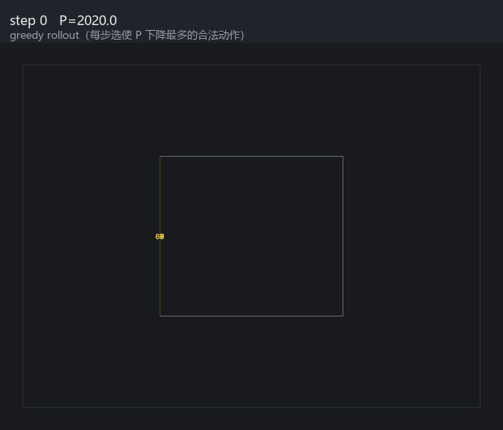
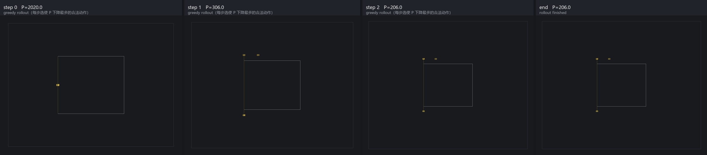

item 4 · 单独产出
RL 仿真环境 greedy rollout
环境是 LayoutEnv（Executor + Evaluator）。每步枚举合法离散动作，选使公式代价 P 下降最多的一步（不是已训练的策略）。用来说明：决策侧强化学习的仿真器已经闭环，剩下的是采样与 PPO。
奖励 = ΔP/100 − 0.05 步数惩罚；Accept 且硬约束清零时 +2 终局奖励。learned_quality 未接入奖励，避免 hack 未校准的学习维度。
动画

分帧条带

| step | 动作 | P | V_hard | reward |
|---|---|---|---|---|
| 0 | BalanceLinearSides | 2020.0 | 20 | 17.09 |
| 1 | SetLinearSide | 306.0 | 3 | 0.95 |
| 2 | Accept | 206.0 | 2 |